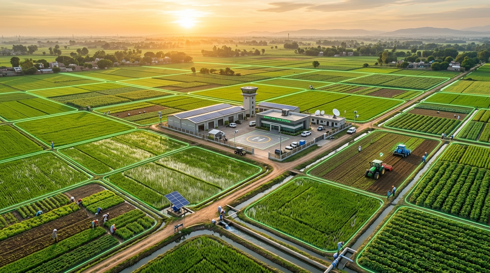

"FarmPilot doesn't just record what happened — it computes what needs to happen next, who should do it, how much it will cost, and maintains an unalterable forensic audit trail across every demarcated field parcel."

FarmPilot replaces fragmented spreadsheets with an event-driven loop that links microclimates, AWD flooding, labour costs, and financial ledgers.
Paddy fields do not require continuous flooding. FarmPilot’s AWD protocol maintains a calibrated safe submersion range (3.0 – 7.0 cm), saving 28% water, slashing borewell power costs, and curtailing anaerobic methane emissions.
Track exactly how many workers worked in each shift, which parcel they operated on, and their calculated expense ($Workers \times Hours \times Rate$). Tomorrow’s 8-worker shift is pre-planned and ready for dispatch.
All users log in to Green Valley Agriculture Ltd, with permissions enforced at route guard and Postgres Row-Level Security levels.
Unrestricted administrative oversight, multi-farm ownership, financial ledgers, audit history, role governance, and 1-click View-As simulation.
Supervises demarcated parcels, manages AWD flooding runs, plans tomorrow's labour shifts, and logs agrochemical stock applications.
Mobile PWA view with zero distractions: today's assigned shift, field location, AWD tube submersion dipstick verification, and task completion.
Evaluates NDVI equivalent crop vigor, diagnoses bacterial leaf blight risks, prescribes micro-nutrient schedules, and audits health indices.
Over 70% of agricultural parcels suffer from intermittent or zero cellular connectivity. FarmPilot is engineered from the ground up as a native Progressive Web Application. Every calculation, decision model, and multilingual engine executes client-side without internet.
The Stage Checker (Day 38 Active Tillering), Sequence Guard (AWD intervals), Schedule Watchdog (Overdue Zinc spray), and Break-Even Yield math (1.81 T/Ac) run in pure JavaScript in memory.
Ask FarmPilot answers questions in Telugu, Hindi, Tamil, Kannada, Marathi, Spanish, etc. Even with airplane mode enabled, the localized agronomist responds with verified farm facts.
When workers complete field tasks, log 45 kg Urea inputs, or record field notes offline, actions are queued safely in local encrypted storage. They automatically sync to PostgreSQL upon reconnection.
Installs with 1 click to Windows, macOS, Android, and iOS home screens. Launches instantly without browser URL bars, with custom icons and app shortcuts.
Test the entire platform offline right now without unplugging your internet. Click the toggle to simulate complete cell tower blackout and explore the app.